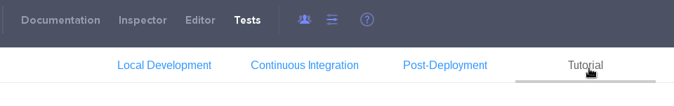
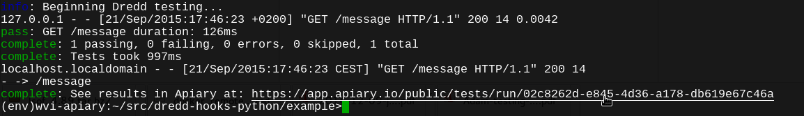

Local API testing with Dredd
First step to get testing running is usually to start with local tests during development. This article serves as a brief introduction to our open source project Dredd which serves this purpose. If you are looking how to setup automated test on your CI please look at the Continuous API testing article.
Local development testing
Dredd is a language agnostic command-line tool for testing API documentation against its back-end implementation. It allows you to write testing hooks in various languages. It also allows to write hooks in any other language but this topic is covered in detail in official Dredd documentation. Dredd is a backbone of our testing service.
Installation
Dredd is based on Node.js so before you start, make sure you have Node.js and npm installed. Dredd is a npm package so installation is straight forward just run
$ npm install -g dredd
and you are set.
Setup and configuration
Assuming you have your project and API description document ready, the only step need to start testing is issue a dredd init command in the root of you project directory. Dredd will ask you couple of questions and set up the configuration file dredd.yml for you.
$ dredd init
? Location of the API description: apiary.apib
? Command to start API backend server e.g. (bundle exec rails server):
? URL of tested API endpoint: (http://localhost:3000)
? Programming language of hooks:
ruby
python
❯ nodejs
? Do you want to use Apiary test inspector? (Y/n)
? Dredd is best served with Continuous Integration. Create CircleCI config for Dredd? (Y/n)
Configuration saved to dredd.yml
Run test now, with:
$ dredd
$
Let’s go through these questions. Location of the API description is obvious. Second is a command how the server should be started before the test run—this can be any command. Third question is the URL you want to test. If you are going to need to change the test behavior and you will need the test hooks, choose the language you are going to use. Fourth question asks if Dredd should send the test results to Apiary test inspector. We suggest to use it as the output of complex HTTP responses and expectations can be hard to read and the test inspector provides an interface for browsing them easily. Reports are anonymous by default, but you can let Apiary save them under your API following the steps described in the tutorial section of Tests Tab when you open your API description where you get also your API Key and API Name.

Last question asks if you want to add support for Continuous Integration provided by Circle CI. Travis CI support is under way but can easily be made by hand. See Continuous API testing for more details.
For more details on what are the options in dredd.yml file please see the Dredd documentation
Running a test
Running a test is just a simple command in the root directory of your project.
$ dredd
When the dredd is finished a link to the test report is provided.

For real-life usage you usually need to prepare the environment or modify the requests made by Dredd. This can be achieved using Dredd Hooks.
Dredd Hooks
Similar to any other testing framework, Dredd supports executing code around each test step. Hooks are code blocks executed in defined stage of execution life cycle. In the hooks code you have an access to compiled HTTP transaction object which you can modify or run anything you need.
Hooks are usually used for:
- Loading db fixtures
- Cleanup after test step or steps
- Handling authentication and sessions
- Passing data between transactions (saving state from responses to stash)
- Modifying request generated from blueprint
- Changing generated expectations
- Custom expectations
- Debugging via logging stuff
Hooks are supported in a number of languages: native Node.js, Ruby, Python, PHP and possibly others. For a complete list of supported language please see official documentation as it changes quite often.